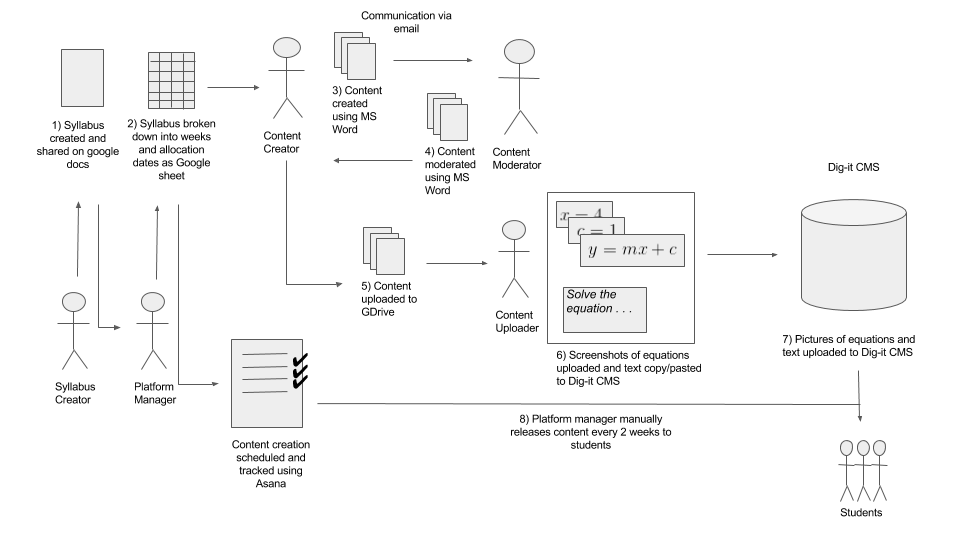

A prototype application to improve the creation, management and delivery of mathematics content on a mobile E-learning platform. The project was undertaken by Nathan Begbie and Ethan Marrs in partnership with Praekelt.org's Dig-it team.
This is a fourth year computer science honours project at the University of Cape Town. The project was completed by Ethan Marrs and Nathan Begbie, and was supervised by Melissa Densmore. This project is about the creation, management and optimization of mathematical content. The project is based on Dig-it, Praekelt.org’s mobile learning platform. Dig-it is planning to scale nationally, and a prototype was created to trial new features that might enable the platform to scale in future.
Dig-it is a mathematics mobi-site aimed at high school students. It supplies them with questions on a weekly basis and rewards them with airtime if a certain percentage of questions are answered correctly. Dig-it currently operates on a small scale with roughly 1500 students from Grades 10 to 12. Dig-it is built and managed by the Praekelt Foundation and is funded by Investec. Dig-it is built with Python and Django, a web framework. In 2017, Dig-it will be scaling to a national level of over 100 000 students in 3 provinces. An overview of the current platform workflow is indicated below.
Extensive analysis
The project had a number of goals:
mcdmk